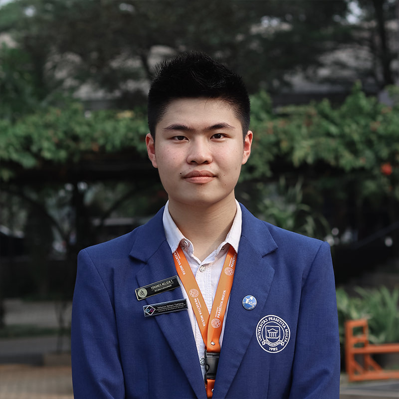

|  | Yohanes Nelsen TjahjonoResearch and Development Specialist Department of Branding BSD City, Kec. Pagedangan, Tangerang, Banten I am a college student from Prasetiya Mulya Univerity majoring in Branding. I have several experience in Research and Development. Currently, I am a Student Board in Research and Development division. I also become the chairmain of a certain seminar called HowtoR&D which teach students about basic information of doing a research method. I am an enthusiastic person and can addapt to many situation. I also have some Organizational experience that help me in learning how to work with many different kind of people |
Universitas Prasetiya Mulya – School of Business and Economics. 2018-present
Saint Albertus Senior High School Malang. 2015-2018
Student Board 2019 │Research and Development
Social Week 2019 │Research and Development Coordinator
Entrepreneur Day 2019 │Research and Development
Eureca 2019 │Research and Development
RnD Workshop : Step with Data – Mrs. Isti Budhi Setiawati. September 2018
RnD Training : SPSS – Mrs. Maria Zefanya Sampe
| ➢TOEFL | - 563 |
| ➢Microsoft Office | - Advance |
| ➢SPSS | - Intermediate |
| ➢Coding Website | - Intermediate |